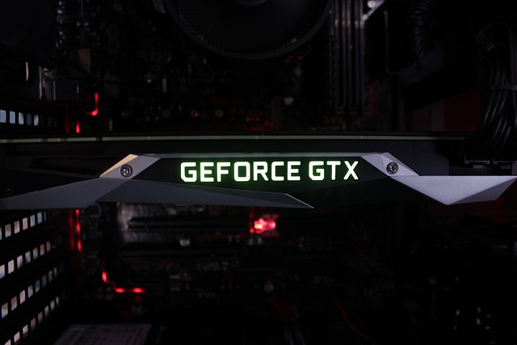

Arquitectura de Computadoras
Bienvenido! Este es el inicio de la Arquitectura de las Computadoras
Unidades
Podras encontrar todas las unidades con sus respectiva informacion en la barra de navegacion

Practicas
Al igual que con las unidades, podras encontrar mis practicas del semestre en la barra de navegacion